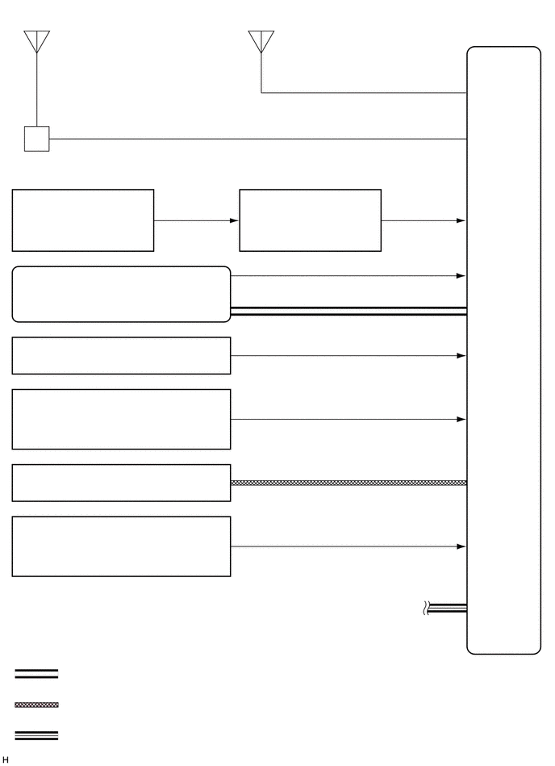

0.74,0.385 2.667,0.656
1.927,0.271
10
false
车窗玻璃天线引线
0.729,0.781 1.167,1.021
0.438,0.24
10
false
- AM
0.719,1.083 1.156,1.323
0.438,0.24
10
false
- FM
0.688,1.865 3.073,2.167
2.385,0.302
10
false
1 号放大器天线总成
3.583,0.375 5.969,0.677
2.385,0.302
10
false
导航天线总成
0.427,2.5 1.792,2.875
1.365,0.375
10
false
方向盘衬垫开关总成
2.094,2.896 3.094,3.104
1,0.208
10
false
开关信号
3.229,2.531 4.865,2.979
1.635,0.448
10
false
带传感器的螺旋电缆分总成
0.896,3.5 2.844,3.781
1.948,0.281
10
false
组合仪表总成
5,2.896 6,3.104
1,0.208
10
false
开关信号
6.083,2.729 6.771,3.417
0.688,0.688
10
false
导航接收器 总成
3.896,3.594 5.313,3.844
1.417,0.25
10
false
车速信号
4.438,4.104 4.667,4.313
0.229,0.208
10
false
*1
0.854,4.406 2.927,4.656
2.073,0.25
10
false
驻车制动开关总成
3.615,4.646 5.448,4.865
1.833,0.219
10
false
驻车制动开关信号
0.292,5.094 2.906,5.385
2.615,0.292
10
false
驻车/空档位置开关总成*2
0.333,5.406 2.552,5.625
2.219,0.219
10
false
倒车灯开关总成*3
0.427,6.021 2.896,6.281
2.469,0.26
10
false
1 号立体声插座适配器总成
0.302,6.698 1.698,6.938
1.396,0.24
10
false
阅读灯总成
0.292,7.031 2.531,7.281
2.24,0.25
10
false
- 电话话筒总成
3.635,7.083 5.25,7.313
1.615,0.229
10
false
话筒语音信号
4.031,5.448 5.052,5.677
1.021,0.229
10
false
倒档信号
0.823,8.573 2.594,8.813
1.771,0.24
10
false
：局部总线通信
0.823,8.979 2.594,9.219
1.771,0.24
10
false
：USB 通信线路
0.823,9.406 2.594,9.646
1.771,0.24
10
false
：CAN 通信线路
3.042,8.552 6.333,8.781
3.292,0.229
10
false
*1：带彩色多信息显示屏的车型
3.042,8.958 6.927,9.188
3.885,0.229
10
false
*2：带无级变速传动桥的车型
3.052,9.385 5.25,9.615
2.198,0.229
10
false
*3：带手动传动桥的车型